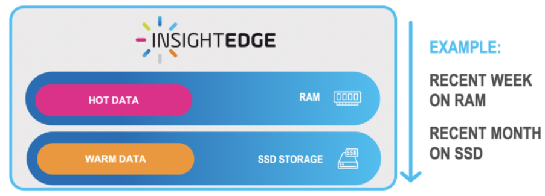
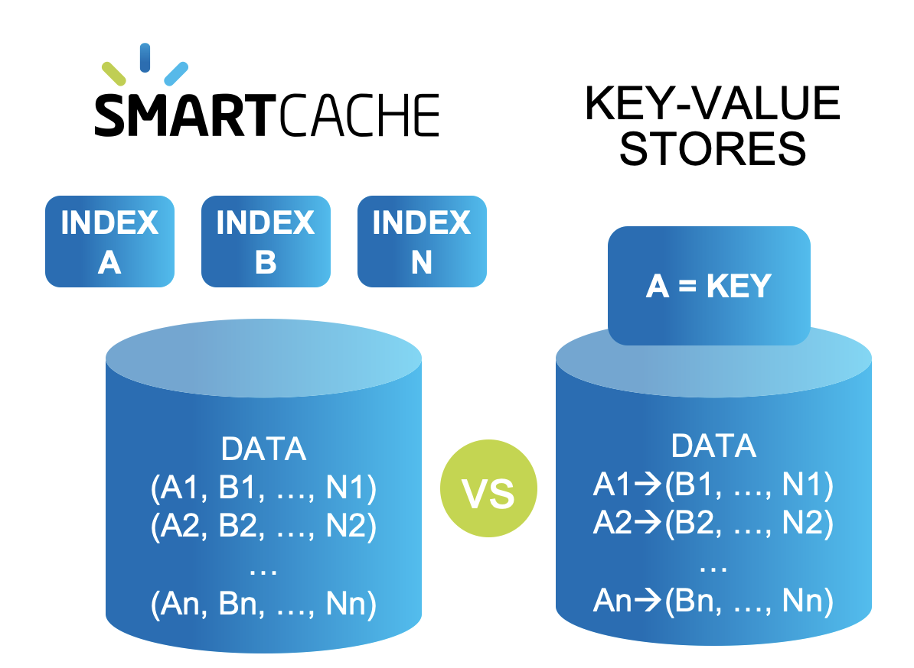
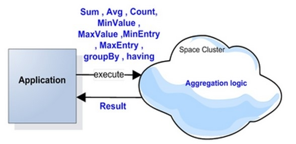
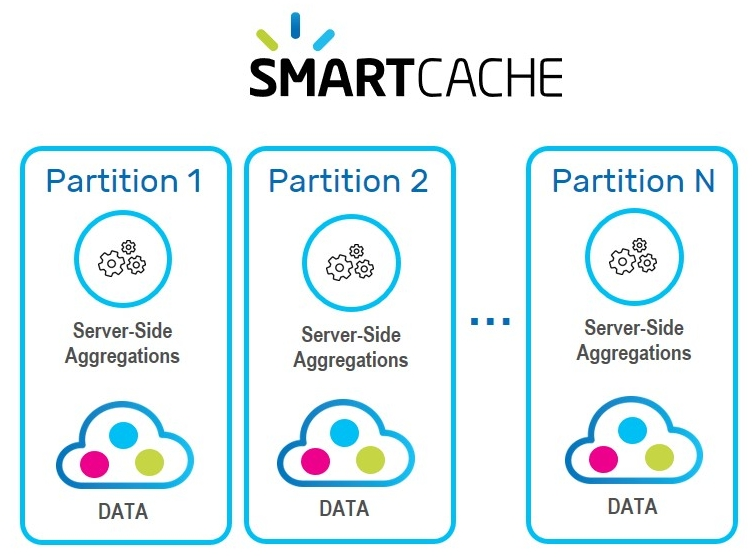
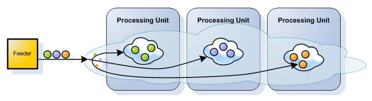
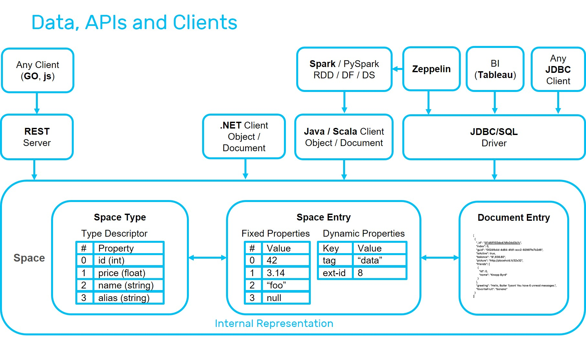
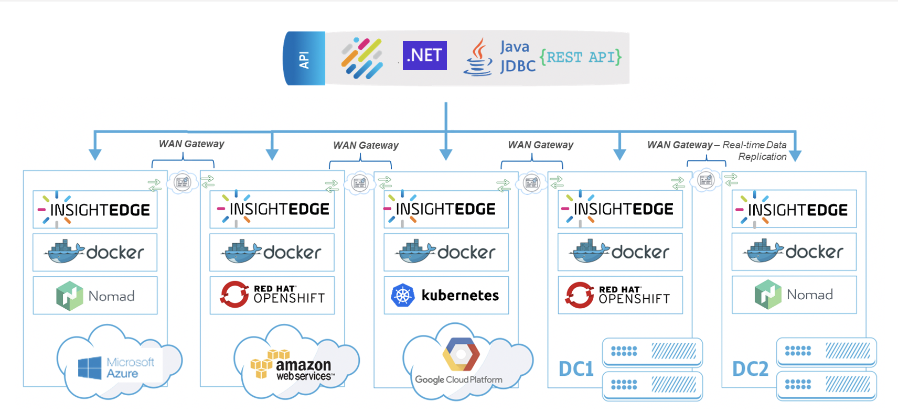
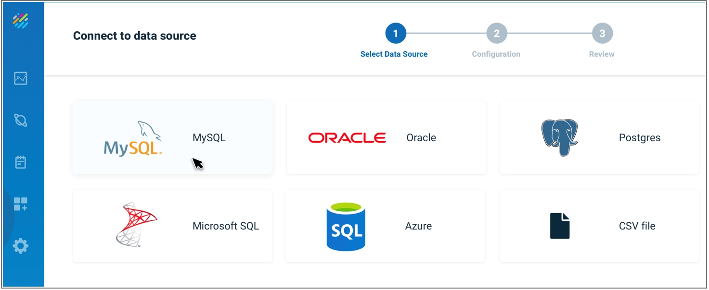
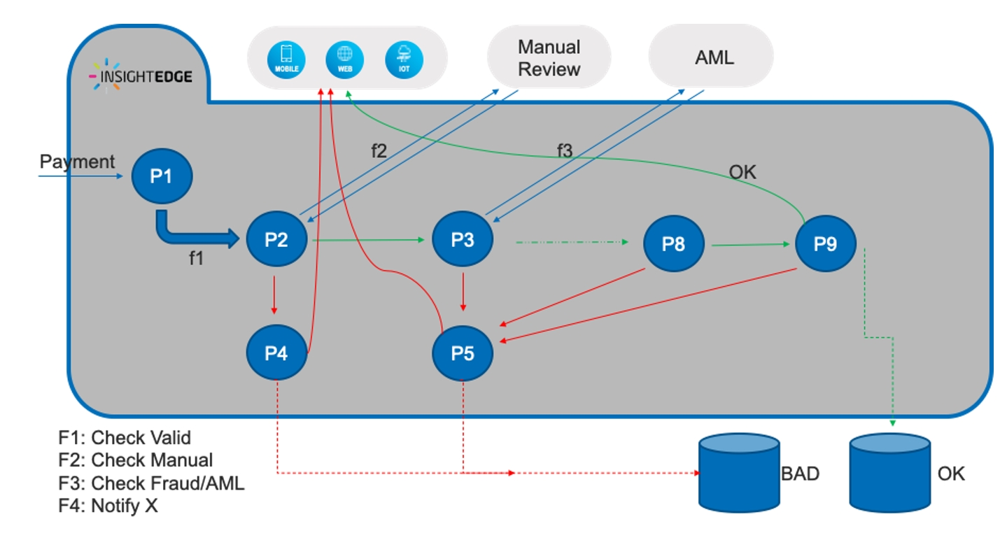

Smart Cache provides fast, scalable cache from any data store. It is fully SQL-99 compliant, and can connect in one click to any operational data store. Additionally it provides out-of-the-box advanced persistency options.
Architecture of Smart Cache
Data is stored in multiple data storage tiers — hot (in-memory), and warm (SSD)
User-defined business rules allows you to place the most important data in hot storage, while other data can be in warm storage.

"Important" does not necessarily mean "most frequently accessed" — for example, your business rules may place premium customers in hot storage, even if their data is less frequently required.
Smart Cache provides unlimited amount of secondary indexes for the stored data, such as Exact, Range, Collections, Compound, Text, and Geo Spatial for optimal performance.
Unlike key-value stores that need to duplicate the entire data store for each defined index,

Smart Cache advanced indexing
Perform an aggregation activity across data stored within space Aggregators are executed by iterating the internal data grid structure that maintains the space objects Out of the box aggregators such as SUM, AVG, MIN, GROUP BY, etc. as well as CUSTOM AGGREGATION LOGIC Fast scan - No materialization of the original user data grid object when performing this iteration

Distributed server-side data aggregation and code co-location provides high concurrency, full data integrity and reduces networking and serialization overhead.

When the objects are written to the Data Grid, they are routed to the proper partition, according to a predefined attribute in the object that acts as the routing index.

User-defined rules can automatically scale up/down or scale out/in when system demands change.
For example a rule could state:
When the RAM in use exceeds 80% of the total currently allocated RAM for more than 2 minutes, scale up the RAM by a factor of 4.
Rules can also be time-dependent, for example automatically changing storage allocations before planned peak system workload.

Smart Cache APIs
Smart Cache supports the full SQL-99 standard, allowing complex queries to be performed with optimal speed and minimal memory footprint. Standard SQL requests used for relational data manipulation can be used without requiring source code changes.
Using Java and .NET APIs, advanced capabilities are available — such as object store, and various data modeling options.
REST-API and command line interfaces are also available.
Smart Cache can easily integrate with BI tools such as Tableau, Looker, and PowerBI.
Deployment options include:
One-click deployment across any scale and environment, on-prem, cloud or hybrid
Hot rolling deployment, upgrade, monitoring, scaling and recovery, all with no downtime
Support of Kubernetes, OpenShift, or built-in ElasticGrid orchestration systems
Support of Kubernetes and OpenShift orchestration systems

Multiple deployment options of Smart Cache
Smart Cache's Ops Manager GUI provides built-in connectors to the most popular databases:

Database tables can be imported as-is, or can be limited to selected columns and other properties using the Ops Manager GUI, and without writing custom code.
Data sources can be on-prem, in the cloud, or a hybrid combination of cloud and on-prem.
Event Processing |
 |
Using